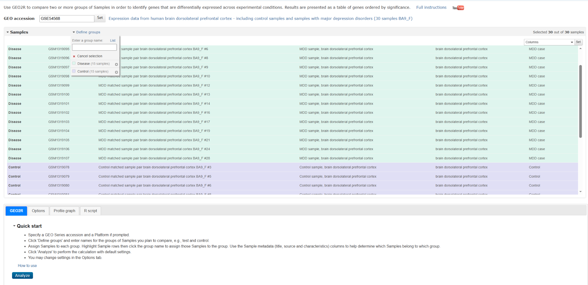
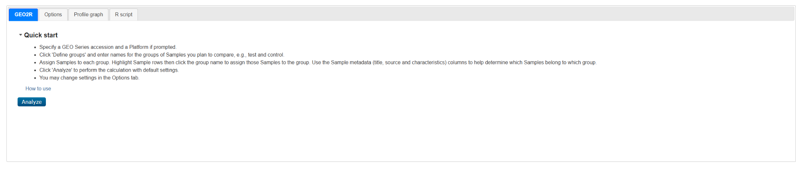
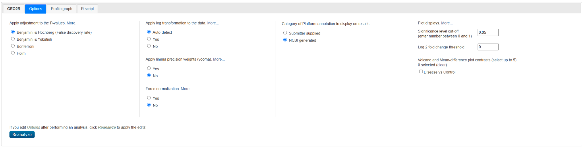
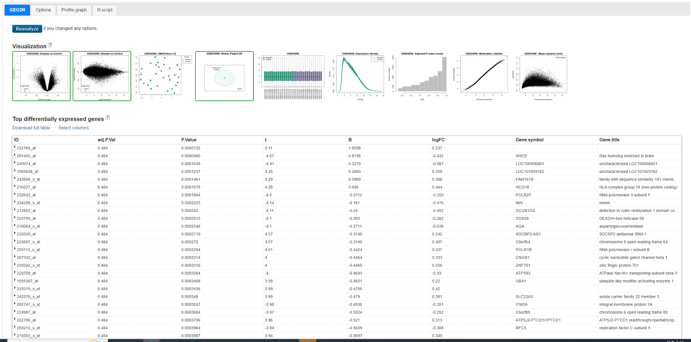
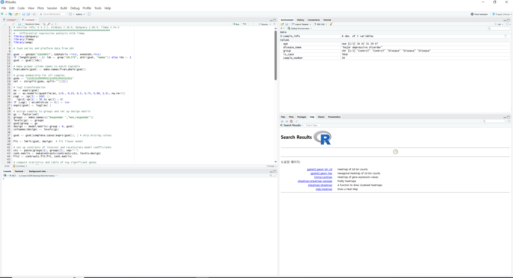
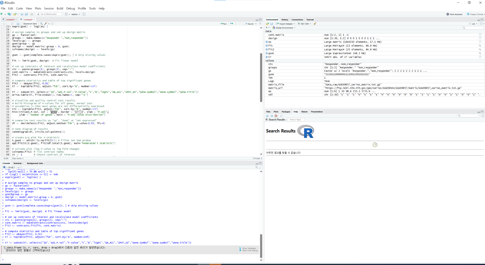
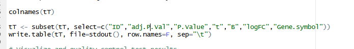

GEO2R란?
GEO2R는 GEO Series에 포함된 두 개 이상의 샘플
그룹을 비교하여 차등발현유전자(DEG)를 찾는 NCBI의 웹 기반 분석
도구입니다. 일반적인 microarray 자료에서는 GEO의 processed
expression data를 불러오고, limma를 이용하여 통계분석을
수행합니다.
1. 메타정보에서 그룹 기준 찾기
GEO2R 화면에는 GSM accession과 함께 title, source name, characteristics 등의 메타정보가 열 형태로 표시됩니다. 먼저 질환 여부, treatment, response, tissue 또는 time point처럼 분석 그룹을 구분할 수 있는 열을 찾습니다.

- Columns에서 그룹 정보가 포함된 열을 화면에 표시합니다.
- 해당 열의 제목을 클릭하여 Disease와 Control이 연속해서 나타나도록 정렬합니다.
- Define groups를 눌러 의미가 분명한 그룹 이름을 만듭니다.
- Shift 또는 Ctrl을 이용해 샘플을 선택하고 해당 그룹에 배정합니다.
- 선택된 샘플 수와 전체 샘플 수가 예상한 연구 설계와 일치하는지 확인합니다.
Disease, Control 또는
Responder, Non_responder처럼 비교 의미가
드러나는 이름을 사용합니다.
2. 그룹 순서와 logFC 방향
일반적인 질환 연구에서는 관심 비교를 Disease − Control로 정의합니다. 따라서 실습에서는 Disease 그룹을 먼저, Control 그룹을 두 번째로 생성하면 방향을 이해하기 쉽습니다.
contrast = Disease - Control
logFC > 0 → Disease에서 발현 증가
logFC < 0 → Disease에서 발현 감소Control − Disease가 되면 logFC의 부호와
상향·하향 해석도 반대가 됩니다. 분석 결과나 Options에 표시되는
Disease vs Control contrast 이름과 생성된 R
script의 contrast 식을 반드시 확인하세요.
질환 그룹을 무조건 먼저 두는 것이 통계적 필수조건은 아닙니다. 핵심은 어떤 그룹에서 어떤 그룹을 뺐는지 명시하고 그 방향대로 결과를 해석하는 것입니다.
3. GEO2R의 네 가지 탭

| 탭 | 역할 | 주요 확인사항 |
|---|---|---|
| GEO2R | 그룹 정의, 샘플 배정, 분석 실행과 결과 확인 | 모든 샘플이 올바른 그룹에 들어갔는지 확인 |
| Options | P-value 보정, log transformation, normalization, annotation과 plot 기준 설정 | 기본값을 무조건 변경하기보다 데이터 처리 정보를 먼저 확인 |
| Profile graph | 선택한 probe 또는 gene의 샘플별 발현 패턴 확인 | 그룹 차이, 이상치와 샘플 간 변동 확인 |
| R script | 현재 분석을 재현하는 R 코드 제공 | 패키지 버전, 그룹 순서, platform과 annotation 열 확인 |
4. Options 탭 이해하기

| 옵션 | 설명 |
|---|---|
| Adjustment to P-values | 다중검정 보정법입니다. 일반적으로 Benjamini & Hochberg FDR를 사용합니다. |
| Log transformation | 발현값의 log2 변환 여부입니다. Auto-detect를 사용할 수 있지만 원 자료의 처리 정보를 함께 확인합니다. |
| limma precision weights (vooma) | 평균과 분산의 관계를 고려하는 정밀도 가중치입니다. 일반적인 microarray 입문 실습에서는 기본값을 유지합니다. |
| Force normalization | 샘플 간 normalization을 강제로 적용할지 결정합니다. 이미 정규화된 Series Matrix에는 중복 적용을 피해야 합니다. |
| Platform annotation | 결과에 표시할 probe-to-gene annotation의 출처를 선택합니다. |
| Significance / log2FC cut-off | 그림에서 유의한 유전자를 표시하는 기준입니다. 연구의 최종 DEG 기준과 구분하여 기록합니다. |
| Plot contrasts | Volcano plot과 mean-difference plot에 표시할 그룹 비교를 선택합니다. |
5. Analyze 결과와 진단 그림
그룹 설정을 마치고 Analyze를 누르면 visualization과 차등발현 결과표가 생성됩니다. DEG 목록만 확인하지 말고, 분석 전제와 샘플 품질을 진단하는 그림도 함께 살펴봅니다.

| 그림 | 해석 |
|---|---|
| Volcano plot | x축은 logFC, y축은 통계적 유의성을 나타냅니다. 양쪽 위에 위치한 probe가 큰 발현차이와 높은 유의성을 가집니다. |
| Mean-difference plot | 평균 발현량에 따른 logFC 분포를 보여줍니다. 특정 발현 범위에서 편향이 있는지 확인합니다. |
| UMAP | 전체 발현 패턴이 유사한 샘플끼리 가까이 배치됩니다. 그룹 분리, 이상치와 배치효과의 가능성을 살펴봅니다. |
| Venn diagram | 여러 contrast에서 유의한 probe의 공통·고유 집합을 나타냅니다. 2그룹 단일 비교에서는 정보가 제한적일 수 있습니다. |
| Boxplot | 샘플별 전체 발현값 분포를 비교합니다. 중앙값과 분포가 크게 다른 샘플은 normalization 또는 품질 문제를 검토합니다. |
| Expression density | 그룹 또는 샘플의 발현값 밀도분포를 비교합니다. 분포의 큰 차이는 전처리·배치 차이를 시사할 수 있습니다. |
| Adjusted P-value count | FDR 기준에 따라 유의한 probe 수가 어떻게 변하는지 보여줍니다. |
| Moderated t statistic | limma의 moderated t-statistic 분포를 이론적 분위수와 비교합니다. 극단값과 전체적인 적합 상태를 참고합니다. |
| Mean-variance trend | 평균 발현량에 따른 잔차분산의 관계를 보여줍니다. 평균 의존적 분산 패턴이 있는지 확인합니다. |
6. DEG 결과표 읽기
| 열 | 의미 |
|---|---|
| ID | microarray probe ID. 하나의 유전자에 여러 probe가 대응할 수 있습니다. |
| logFC | 지정한 contrast 방향의 log2 발현차이입니다. |
| P.Value | 각 probe의 보정 전 P-value입니다. |
| adj.P.Val | 다중검정으로 보정된 P-value이며 일반적으로 FDR로 해석합니다. |
| t | limma의 moderated t-statistic입니다. 부호는 logFC 방향과 같습니다. |
| B | 해당 probe가 차등발현일 log-odds입니다. 값이 클수록 DEG일 가능성이 높습니다. |
| Gene symbol / title | platform annotation에서 가져온 유전자 기호와 설명입니다. 결측 또는 중복이 있을 수 있습니다. |
Download full table을 이용하면 전체 결과를 내려받을
수 있습니다. 화면에 보이는 상위 유전자만으로 결론을 내리지 말고 전체
표에서 사전에 정한 adj.P.Val과
|logFC| 기준을 적용합니다.
7. R script를 내 환경으로 가져오기
R script 탭의 코드를 복사하여 RStudio에서 실행하면 GEO2R와 동일한 분석 흐름을 재현하고, heatmap이나 사용자 정의 volcano plot 등 추가 분석을 수행할 수 있습니다.


가져오기 전에 확인할 사항
-
GEOquery,limma,Biobase등 필요한 패키지가 설치되어 있는지 확인합니다. - GEO2R 화면과 로컬 R의 패키지 버전 차이로 결과가 미세하게 달라질 수 있습니다.
- 여러 GPL이 포함된 GSE에서는 코드가 선택한 platform이 의도한 GPL인지 확인합니다.
-
gsms와sml부분의 그룹 배정이 화면에서 설정한 Disease와 Control 순서와 일치하는지 확인합니다. - GEO 자료가 수정되었거나 네트워크·캐시 상태가 다르면 내려받은 객체가 달라질 수 있으므로 accession과 분석일을 기록합니다.
주의 1. maptools 코드는 삭제하기
GEO2R script의 UMAP 부분 끝에는 다음 코드가 포함될 수 있습니다.
library("maptools")
pointLabel(
ump$layout,
labels = rownames(ump$layout),
method = "SANN",
cex = 0.6
)
maptools는 CRAN에서 삭제되어 최신 R에서는 일반적인
방법으로 설치되지 않습니다. 이 코드는 UMAP 점 옆에 샘플 이름을
표시하기 위한 부가 기능이며
DEG 계산에는 사용되지 않습니다. 이번 실습에서는 위
두 명령을 삭제하고 기본 UMAP까지만 그립니다.
# 여기까지만 실행
plot(
ump$layout,
main = "UMAP plot, nbrs=13",
xlab = "",
ylab = "",
col = gs,
pch = 20,
cex = 1.5
)
legend(
"topright",
inset = c(-0.15, 0),
legend = levels(gs),
pch = 20,
col = 1:nlevels(gs),
title = "Group",
pt.cex = 1.5
)pointLabel()은
이미 계산된 UMAP 위에 글자만 추가합니다. lmFit(),
eBayes(), topTable() 결과에는 영향을 주지
않습니다.
주의 2. 모든 probe 결과 가져오기
GEO2R script의 topTable()은 다음과 같이 상위 250개만
반환하도록 작성될 수 있습니다.
# 기본 코드: 상위 250개만 반환
tT <- topTable(
fit2,
adjust = "fdr",
sort.by = "B",
number = 250
)
# 수정 코드: 모든 probe 반환
tT <- topTable(
fit2,
adjust = "fdr",
sort.by = "B",
number = Inf
)주의 3. 존재하지 않거나 중복된 annotation 열
platform마다 annotation 열 이름이 다르기 때문에 GEO2R가 만든 다음 코드가 그대로 작동하지 않을 수 있습니다.

tT <- subset(
tT,
select = c(
"ID", "adj.P.Val", "P.Value", "t", "B", "logFC",
"GB_ACC", "SPOT_ID", "Gene.Symbol",
"Gene.symbol", "Gene.title"
)
)
undefined columns selected 또는 중복 열 이름 관련
오류가 발생하면 먼저 실제 열 이름을 확인합니다.

colnames(tT)로 확인한 뒤 GSE69657 실습에 필요한 7개
열만 선택합니다.
# 실제 열 이름 확인
colnames(tT)
# GSE69657 실습에서 필요한 결과 열
needed_cols <- c(
"ID", "adj.P.Val", "P.Value", "t", "B", "logFC", "Gene.symbol"
)
missing_cols <- setdiff(needed_cols, colnames(tT))
if (length(missing_cols) > 0) {
stop(
"다음 열이 없습니다: ",
paste(missing_cols, collapse = ", ")
)
}
tT_export <- tT[, needed_cols, drop = FALSE]
# 결과를 파일로 저장
write.csv(
tT_export,
"GSE69657_limma_all_results.csv",
row.names = FALSE,
fileEncoding = "UTF-8"
)colnames(tT) 결과를 보고 실제 gene symbol이 들어 있는
열 하나를 선택하세요.
주의 4. getGEO() 다운로드 오류 해결
다음 오류는 limma 분석이나 그룹 설정의 문제가 아니라, GEO Series Matrix 파일을 Windows 임시 폴더로 내려받는 단계에서 실패했다는 의미입니다.
Found 1 file(s)
GSE69657_series_matrix.txt.gz
Failed to download .../GSE69657_series_matrix.txt.gz!잠시 뒤 같은 코드가 정상적으로 실행된다면 NCBI GEO 서버의 일시적 응답 지연 또는 연결 문제였을 가능성이 큽니다. 먼저 몇 분 뒤 다시 시도합니다. 반복적으로 실패할 때만 인터넷 연결, 보안 프로그램·기관망, timeout 또는 임시 폴더 접근 문제를 아래 순서대로 점검합니다.
1단계: R과 패키지 상태 확인
R.version.string
packageVersion("GEOquery")
if (!requireNamespace("BiocManager", quietly = TRUE)) {
install.packages("BiocManager")
}
BiocManager::valid()2단계: timeout과 다운로드 방식을 설정한 뒤 다시 시도
options(timeout = 600)
options(download.file.method = "libcurl")
dir.create("data_raw", showWarnings = FALSE)
gset <- getGEO(
"GSE69657",
GSEMatrix = TRUE,
AnnotGPL = TRUE,
destdir = "data_raw"
)
destdir = "data_raw"를 지정하면 다운로드 위치가 일회성
임시 폴더가 아니라 현재 프로젝트의 data_raw 폴더가
됩니다. 같은 파일을 다시 사용할 수 있고 경로 문제도 확인하기
쉽습니다.
3단계: annotation 다운로드를 분리하여 원인 확인
gset <- getGEO(
"GSE69657",
GSEMatrix = TRUE,
AnnotGPL = FALSE,
getGPL = FALSE,
destdir = "data_raw"
)
이 코드는 우선 Series Matrix만 가져옵니다. 다운로드가 성공하면
annotation은 나중에 GPL 또는 플랫폼 annotation 패키지로 연결할 수
있습니다. 따라서 이 방법을 썼다면 결과표에
Gene.symbol 같은 annotation 열이 없을 수 있습니다.
4단계: 브라우저에서 파일을 직접 내려받은 경우
GEO의 Series Matrix File(s)에서
GSE69657_series_matrix.txt.gz를 내려받아 프로젝트의
data_raw 폴더에 저장한 뒤 다음과 같이 읽을 수 있습니다.
gset <- getGEO(
filename = "data_raw/GSE69657_series_matrix.txt.gz"
)data_raw에 남아 있다면 삭제하거나 이름을 바꾸고 다시
받습니다. 병원·기관 네트워크에서 계속 실패하면 일반 인터넷 연결에서
NCBI GEO 파일 주소가 열리는지도 확인하세요. 인증서 검사를 끄는
방식은 권장하지 않습니다.
이번 실습에서 사용할 수정 순서
- GEO2R R script 전체를 새 R Script에 붙여넣고 파일로 저장합니다.
-
maptools와pointLabel()부분을 삭제합니다. -
number = 250을number = Inf로 변경합니다. -
기존의 긴
subset(... select = ...)코드는 우선 주석 처리합니다. -
colnames(tT)를 실행해 GSE69657에 실제 존재하는 열을 확인합니다. -
intersect()로 존재하는 열만 골라tT_export를 만듭니다. -
getGEO()가 실패하면 timeout →destdir→ annotation 제외 → 수동 다운로드 순서로 점검합니다.
8. DEG 기준 설정과 상향·하향 유전자 저장
topTable()의 전체 결과에서 통계적 유의성과 효과크기
기준을 동시에 적용하여 상향조절 및 하향조절 probe를 분리할 수
있습니다. 이번 GSE69657 실습에서 보관할 기본 열은 다음과 같습니다.
needed_cols <- c(
"ID", "adj.P.Val", "P.Value", "t", "B", "logFC", "Gene.symbol"
)
tT <- tT[, needed_cols, drop = FALSE]| 열 | 실습에서 사용하는 이유 |
|---|---|
ID |
microarray probe ID입니다. 하나의 유전자에 여러 probe가 대응할 수 있습니다. |
P.Value |
각 probe에 대한 보정 전 P-value입니다. |
adj.P.Val |
여러 probe를 동시에 검정한 것을 고려한 BH-FDR 값입니다. |
logFC |
설정한 contrast 방향의 log2 fold change입니다. |
t |
limma의 moderated t-statistic입니다. |
B |
차등발현일 log-odds입니다. |
Gene.symbol |
probe에 대응하는 gene symbol입니다. 다른 GPL에서는 열 이름이 달라질 수 있습니다. |
logFC는 어떻게 계산되는가?
limma는 각 probe마다 별도의 선형모형을 적합합니다.
두 그룹만 있고 다른 공변량이 없는 현재 설계에서는
Responder − Non_responder contrast의 logFC가 다음과
같이 해석됩니다.
logFC =
Responder 그룹의 평균 log2 발현값
- Non_responder 그룹의 평균 log2 발현값
따라서 logFC = 1이면 Responder의 발현이 약
2^1 = 2배, logFC = -1이면 약
2^-1 = 0.5배입니다. 전체 유전자의 평균을 지나는 하나의
선에서 거리를 계산하는 방식은 아닙니다. ANOVA와 회귀분석은 모두
선형모형의 표현이므로 구조적으로 연결되어 있지만, limma에서는 design
matrix와 contrast로 원하는 그룹 차이를 직접 정의합니다.
P.Value와 adj.P.Val 중 무엇을 사용할까?
| 기준 | 장점 | 한계와 권장 용도 |
|---|---|---|
P.Value < 0.05 |
표본 수가 작고 신호가 약한 탐색 연구에서 더 많은 후보를 얻을 수 있습니다. | 수만 개 probe를 검정할 때 거짓양성 증가를 제어하지 못합니다. 가설 생성용으로만 명시하고 독립 코호트나 실험으로 검증하는 것이 좋습니다. |
adj.P.Val < 0.05 |
BH 방식으로 발견된 결과 중 기대되는 거짓발견 비율(FDR)을 제어합니다. | 표본 수가 작으면 통계력이 낮아 유의한 DEG가 거의 없을 수 있지만, genome-wide 분석의 주 결과에는 일반적으로 더 적절합니다. |
logFC 기준 선택
logFC cut-off는 플랫폼, 조직, 표본 수, 예상되는 생물학적 효과와 연구 목적에 따라 달라질 수 있습니다. 자주 사용되는 기준의 배수 변화는 다음과 같습니다.
| |logFC| | 대략적인 fold change | 해석 |
|---|---|---|
| 0 | 1배 초과 | 효과크기 필터를 사실상 적용하지 않음 |
| 0.5 | 1.41배 | 작지만 일관된 변화를 탐색할 때 |
| 1 | 2배 | 입문 실습과 비교적 큰 변화 선별에 자주 사용 |
| 1.5 | 2.83배 | 더 큰 변화에 집중 |
| 2 | 4배 | 매우 큰 변화만 선별 |
실습: up/down DEG 저장하기
아래 코드는 실습 기준을 P.Value < 0.05 및
|logFC| > 1로 정한 예입니다.
# 실습용 기준: nominal P-value < 0.05, |logFC| > 1
up_degs <- tT[
!is.na(tT$P.Value) &
!is.na(tT$logFC) &
tT$P.Value < 0.05 &
tT$logFC > 1,
]
down_degs <- tT[
!is.na(tT$P.Value) &
!is.na(tT$logFC) &
tT$P.Value < 0.05 &
tT$logFC < -1,
]
nrow(up_degs)
nrow(down_degs)
write.csv(
up_degs,
file = "./results/up_degs.csv",
row.names = FALSE
)
write.csv(
down_degs,
file = "./results/down_degs.csv",
row.names = FALSE
)
FDR 기준을 사용하려면 위 코드의 P.Value를
adj.P.Val로 변경합니다.
# FDR 기준 예
up_degs_fdr <- tT[
tT$adj.P.Val < 0.05 & tT$logFC > 1,
]
down_degs_fdr <- tT[
tT$adj.P.Val < 0.05 & tT$logFC < -1,
]up_degs는 Responder에서 높은 probe이고
down_degs는 Responder에서 낮은 probe입니다. contrast를
반대로 만들면 이 해석도 반대가 됩니다.
통계 설명의 참고자료
- Ritchie et al., 2015 — limma powers differential expression analyses: probe별 선형모형, contrast와 empirical Bayes 분산 조절을 설명합니다.
-
limma User’s Guide: design matrix, contrast와
topTable()의 공식 사용법입니다. - R p.adjust 공식 문서: BH 방식과 FDR의 의미를 설명합니다.
종합 실습: GEO2R 분석 기록지
Step 03에서 선정한 데이터셋을 GEO2R로 분석하고 아래 내용을 기록하세요.
- 그룹 구분에 사용할 metadata 열을 찾고 Disease와 Control의 정의를 작성합니다.
- Disease를 먼저, Control을 두 번째로 생성한 뒤 각 그룹에 5–10개 샘플을 배정합니다.
- 샘플 수, 조직, 시점, treatment와 platform이 두 그룹에서 비교 가능한지 확인합니다.
- Options의 P-value 보정법, log transformation과 normalization 설정을 기록합니다.
- Analyze 후 boxplot, density plot과 UMAP에서 이상치 또는 batch 가능성을 평가합니다.
-
결과의 contrast가
Disease − Control인지 확인하고, logFC 양수·음수 유전자의 의미를 작성합니다. -
R script를 복사하고
maptools부분을 삭제한 뒤number = Inf로 수정하여 모든 결과를 생성합니다. -
colnames(tT)로 열 이름을 확인한 뒤 필요한 열만 선택합니다.
제출용 기록표
| GSE / GPL | |
|---|---|
| 그룹 기준 metadata 열 | |
| Disease 정의 / n | |
| Control 정의 / n | |
| Contrast | Disease − Control |
| P-value 보정법 | |
| log2 / normalization 설정 | |
| QC 그림에서 확인한 문제 | |
| 적용한 DEG 기준 | |
| 상향 / 하향 DEG 수 | |
| 사용한 gene symbol 열 |
생각해보기
Disease에서 발현이 높은 유전자의 logFC가 음수로 나왔다면 무엇을 먼저 확인해야 할까요? 그룹 배정, contrast 방향, sample label과 실제 metadata가 일치하는지 순서대로 점검해보세요.